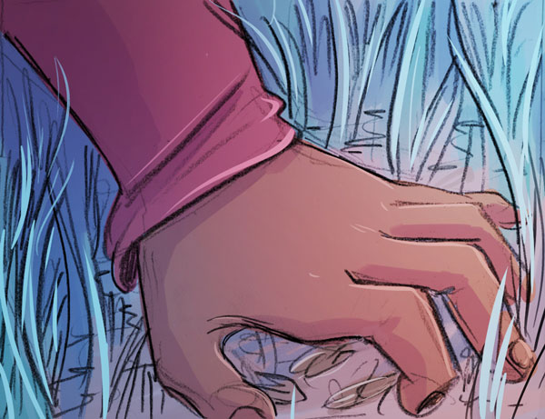
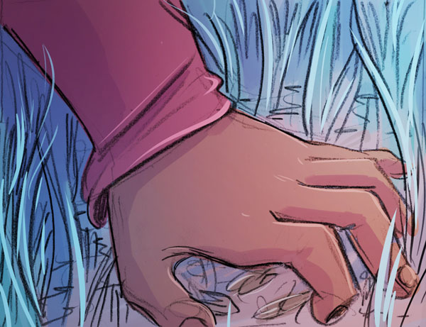

so this flower, they showed you what it looked like?
yes, it was small... white with blue speckles...
so this flower, they showed you what it looked like?
yes, it was small... white with blue speckles...


ah yes, I thought so.
I know where it grows, I think!
Ah, this is the grove where they grow...

...but where
are they?

oh!
...oh no!

it's dead!

are there others somewhere?
no... it won't
be anywhere else.
that's probably why they gave you this task.

well, crap.

so, how long exactly have you been here?
i don't know exactly, it's hard to tell...
 

some more bubbles here
etc etc etc
.

wait...
are these
seeds...?


hmmm?


there!
...this might... take a while...

yeah... plants don't just grow straight away..

Time is strange here, through
If we leave and come back later, it might be grown..